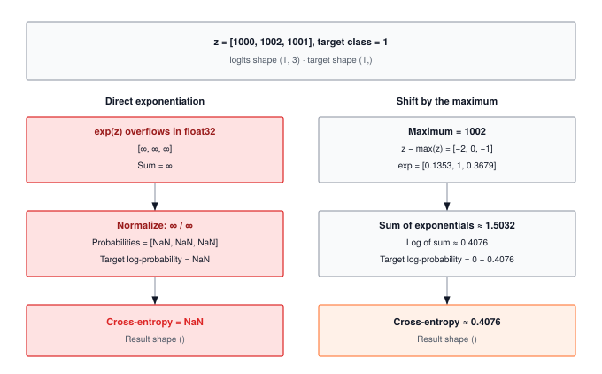

Module 04: Losses
A loss function reduces a full output tensor to a single scalar. That reduction is the only signal the optimizer ever sees. Build the reduction wrong, or apply it to the wrong axis, and every gradient flowing backward through autograd optimizes the wrong objective.
FOUNDATION TIER | Difficulty: ●●○○ | Time: 4-6 hours | Prerequisites: 01, 02, 03
Prerequisites: Modules 01 (Tensor), 02 (Activations), and 03 (Layers) must be completed. This module assumes you understand:
- Tensor operations and broadcasting (Module 01)
- Activation functions and their role in neural networks (Module 02)
- Layers and how they transform data (Module 03)
If you can build a simple neural network that takes input and produces output, you’re ready to learn how to measure its quality.
🎧 Audio Overview
Listen to an AI-generated overview.
Overview
A neural network without a loss function is a guess machine. The loss is the single scalar that tells optimization which direction to move — turning a forward pass into a learning step. Get it wrong and training stalls, diverges, or silently optimizes the wrong objective.
In this module you’ll implement three losses that cover most supervised learning: Mean Squared Error for regression, CrossEntropy for multi-class classification, and Binary Cross-Entropy for multi-label or binary decisions. Along the way you’ll implement the log-sum-exp trick — the one numerical safeguard that separates a softmax that trains from one that returns nan on the first batch with large logits.
By the end, you’ll know not just how to compute each loss, but why the choice of loss reshapes what your model learns, and where naive implementations break at production scale.
Learning Objectives
- Implement MSELoss for regression, CrossEntropyLoss for multi-class classification, and BinaryCrossEntropyLoss for binary decisions
- Master the log-sum-exp trick for numerically stable softmax computation
- Understand computational complexity (O(B×C) for cross-entropy with large vocabularies) and memory trade-offs
- Analyze loss function behavior across different prediction patterns and confidence levels
- Connect your implementation to production PyTorch patterns and engineering decisions at scale
What You’ll Build

Implementation roadmap:
Table 1 lays out the implementation in order, one part at a time.
| Step | What You’ll Implement | Key Concept |
|---|---|---|
| 1 | log_softmax() |
Log-sum-exp trick for numerical stability |
| 2 | MSELoss.forward() |
Mean squared error for continuous predictions |
| 3 | CrossEntropyLoss.forward() |
Negative log-likelihood for multi-class classification |
| 4 | BinaryCrossEntropyLoss.forward() |
Cross-entropy specialized for binary decisions |
The pattern you’ll enable:
# Measuring prediction quality
loss = criterion(predictions, targets) # Scalar feedback signal for learningWhat You’re NOT Building (Yet)
To keep this module focused, you will not implement:
- Gradient computation (automatic differentiation is a later module)
- Advanced loss variants (Focal Loss, Label Smoothing, Huber Loss)
- Hierarchical or sampled softmax for large vocabularies (PyTorch optimization)
- Custom reduction strategies beyond mean
You are building the core feedback signal. Gradient-based learning comes next.
API Reference
This section provides a quick reference for the loss functions you’ll build. Use it as your cheat sheet while implementing and debugging.
Helper Functions
log_softmax(x: Tensor, dim: int = -1) -> TensorComputes numerically stable log-softmax using the log-sum-exp trick. This is the foundation for cross-entropy loss.
Parameters: - x (Tensor): Input tensor containing logits (raw model outputs, unbounded values) - dim (int): Dimension along which to compute log-softmax (default: -1, last dimension)
Returns: Tensor with same shape as input, containing log-probabilities
Note: Logits are raw, unbounded scores from your model before any activation function. CrossEntropyLoss expects logits, not probabilities.
Loss Functions
All loss functions follow the same pattern:
Table 2 gives the mathematical form, output range, and typical use case of each.
| Loss Function | Constructor | Forward Signature | Use Case |
|---|---|---|---|
MSELoss |
MSELoss() |
forward(predictions: Tensor, targets: Tensor) -> Tensor |
Regression |
CrossEntropyLoss |
CrossEntropyLoss() |
forward(logits: Tensor, targets: Tensor) -> Tensor |
Multi-class classification |
BinaryCrossEntropyLoss |
BinaryCrossEntropyLoss() |
forward(predictions: Tensor, targets: Tensor) -> Tensor |
Binary classification |
Common Pattern:
loss_fn = MSELoss()
loss = loss_fn(predictions, targets) # __call__ delegates to forward()Input/Output Shapes
Understanding input shapes is crucial for correct loss computation:
Table 3 pins down the shape contract each loss expects.
| Loss | Predictions Shape | Targets Shape | Output Shape |
|---|---|---|---|
| MSE | (N,) or (N, D) |
Same as predictions | () scalar |
| CrossEntropy | (N, C) logits¹ |
(N,) class indices² |
() scalar |
| BinaryCrossEntropy | (N,) probabilities³ |
(N,) binary labels (0 or 1) |
() scalar |
Where N = batch size, D = feature dimension, C = number of classes
Notes: 1. Logits: Raw unbounded values from your model (e.g., [2.3, -1.2, 5.1]). Do NOT apply softmax before passing to CrossEntropyLoss. 2. Class indices: Integer values from 0 to C-1 indicating the correct class (e.g., [0, 2, 1] for 3 samples). 3. Probabilities: Values between 0 and 1 after applying sigmoid activation. Must be in valid probability range.
Core Concepts
This section covers the fundamental ideas you need to understand loss functions deeply. These concepts apply to every ML framework, not just TinyTorch.
Loss as a Feedback Signal
A loss function turns “how good is my model?” into a single number that optimization can act on. Predict $250,000 for a house that sold for $245,000 — how wrong is that compared to predicting $150,000? The loss assigns a precise penalty to each, and the gradient of that penalty tells the optimizer which way to move every parameter.
That second part is what matters. A loss must be differentiable: you need not just the current error, but the direction to move to reduce it. This is why MSE squares the error rather than taking the absolute value — the square has a smooth gradient everywhere, while |x| has a kink at zero that confuses optimizers.
Every training iteration is the same loop: forward pass produces predictions, loss measures error, backward pass turns that error into parameter updates. The loss value is the scalar summary of model quality for the whole batch — and the only signal the optimizer ever sees.
Mean Squared Error
MSE is the foundational loss for regression problems. It measures the average squared distance between predictions and targets. The squaring serves three purposes: it makes all errors positive (preventing cancellation), it heavily penalizes large errors, and it creates smooth gradients for optimization.
Here’s the complete implementation from your module:
The code in ?@lst-04-losses-mse makes this concrete.
def forward(self, predictions: Tensor, targets: Tensor) -> Tensor:
"""Compute mean squared error between predictions and targets."""
# Step 1: Compute element-wise difference
diff = predictions.data - targets.data
# Step 2: Square the differences
squared_diff = diff ** 2
# Step 3: Take mean across all elements
mse = np.mean(squared_diff)
return Tensor(mse): Listing 4.1 — Mean squared error forward pass: subtract, square, average. {#lst-04-losses-mse}
Three operations: subtract, square, average. Yet squaring creates a quadratic error landscape: an error of 10 contributes 100 to the loss; an error of 20 contributes 400. The optimizer sees the worst-predicted samples as four times more important than samples half as wrong, so it spends most of its capacity fixing the largest errors first.
Back to house prices. An error of $5,000 squares to 25M. An error of $50,000 squares to 2.5B — one hundred times the penalty for ten times the error. That asymmetry is MSE’s defining feature: it aggressively corrects outliers, but it also lets noisy labels dominate the gradient. If your dataset has bad labels, MSE will chase them.
Cross-Entropy Loss
Cross-entropy measures surprise: how unexpected the true label is under the distribution your model predicted. Where MSE measures geometric distance in output space, cross-entropy measures information-theoretic mismatch in probability space — and that distinction is why classifiers train faster with cross-entropy than with MSE on the same logits.
The formula reduces to a single number: the negative log-probability the model assigned to the correct class. Easy to write, easy to break — the implementation lives or dies on numerical stability:
The code in ?@lst-04-losses-cross-entropy makes this concrete.
def forward(self, logits: Tensor, targets: Tensor) -> Tensor:
"""Compute cross-entropy loss between logits and target class indices."""
# Step 1: Compute log-softmax for numerical stability
log_probs = log_softmax(logits, dim=-1)
# Step 2: Select log-probabilities for correct classes
batch_size = logits.shape[0]
target_indices = targets.data.astype(int)
# Select correct class log-probabilities using advanced indexing
selected_log_probs = log_probs.data[np.arange(batch_size), target_indices]
# Step 3: Return negative mean (cross-entropy is negative log-likelihood)
cross_entropy = -np.mean(selected_log_probs)
return Tensor(cross_entropy): Listing 4.2 — CrossEntropyLoss forward pass fusing log-softmax with target-class selection. {#lst-04-losses-cross-entropy}
The critical detail is calling log_softmax directly instead of log(softmax(...)). The two are mathematically identical but computationally worlds apart: a logit of 100 makes exp(100) ≈ 2.7×10^43, which overflows float32 to inf, which becomes nan after division. The fused log-softmax never materializes the dangerous exponentials — see the next subsection for the trick.
Cross-entropy’s gradient pressure is asymmetric on purpose. Predict 0.99 for the correct class and the loss is -log(0.99) ≈ 0.01; predict 0.01 and the loss is -log(0.01) ≈ 4.6 — 460× larger for the same gap in probability. The further the model is from “confident and right,” the harder cross-entropy pulls — which is exactly the dynamic you want for classification.
Complexity. Cross-entropy loss is O(B × C) in both time and memory, where B is batch size and C is the number of classes. Every logit must be exponentiated (to form softmax) and every log-probability must be read back out to pick the target’s score. MSE and BCE are O(B × D) where D is the feature dimension — cheaper, because there is no normalizing sum over classes. This is why large-vocabulary language models (C = 50,000+) spend a disproportionate share of training time in the loss, and why hierarchical and sampled softmax variants exist to drop effective C.
Numerical Stability in Loss Computation
The log-sum-exp trick is the single most important numerical-stability technique in classification. The problem it solves is structural: softmax requires exponentiating every logit, but exp overflows float32 at inputs above ~88. Real models routinely produce logits in the hundreds.
Watch what happens without the trick. Naive softmax computes exp(x) / sum(exp(x)). With logits [100, 200, 300], the denominator alone needs exp(300) ≈ 1.97×10^130 — inf in float32, and inf / inf = nan everywhere downstream. The fix is to subtract the per-row max before exponentiating, which leaves the result mathematically unchanged but pulls every exponent into the safe range:
The code in ?@lst-04-losses-log-softmax makes this concrete.
def log_softmax(x: Tensor, dim: int = -1) -> Tensor:
"""Compute log-softmax with numerical stability."""
# Step 1: Find max along dimension for numerical stability
x_max = np.max(x.data, axis=dim, keepdims=True)
# Step 2: Subtract max to prevent overflow
shifted = x.data - x_max
# Step 3: Compute log(sum(exp(shifted)))
log_sum_exp = np.log(np.sum(np.exp(shifted), axis=dim, keepdims=True))
# Step 4: Return log_softmax = shifted - log_sum_exp
result = shifted - log_sum_exp
return Tensor(result): Listing 4.3 — Numerically stable log-softmax via the log-sum-exp shift. {#lst-04-losses-log-softmax}
After subtracting the max (300), the shifted logits become [-200, -100, 0]. The largest exponent is now exp(0) = 1.0 — always safe. The smallest, exp(-200), underflows to 0, but those terms were going to round to nothing in the sum anyway, so the loss is exact in the regime we care about.
The trick is algebraically exact, not an approximation: subtracting a constant m from every logit multiplies both the numerator and denominator of softmax by exp(-m), which cancels. What changes is the floating-point dynamic range — and that change is the difference between training and nan.
Reduction Strategies
All three loss functions reduce a batch of per-sample errors to a single scalar by taking the mean. Mathematically, this is trivial: just sum the values and divide by the count. However, from a systems perspective, condensing millions of concurrent loss calculations down to a single number presents a massive synchronization bottleneck. When thousands of GPU threads attempt to update a global sum simultaneously, the hardware must meticulously orchestrate the memory access to prevent threads from overwriting each other’s work.
To prevent data races during mean or sum calculations, hardware could use atomic locks to ensure only one thread updates the global sum at a time. However, excessive locking bottlenecks performance. Instead, frameworks use parallel reductions: threads sum their local chunks independently, and the results are aggregated hierarchically (like a tournament bracket). Furthermore, when summing millions of elements, the running total can become so large that adding small individual losses gets swallowed by FP32 precision limits. To prevent precision loss, these reductions are often accumulated in higher precision (FP64) or calculated in blocks.
Mean reduction does two useful things. It normalizes by batch size, so loss values are comparable across batches of 32 and 128 samples — and it makes the per-sample gradient contribution 1/B, which keeps gradient magnitudes stable as you scale the batch. Sum reduction (np.sum) drops the 1/B, so the gradient grows linearly with batch size; if you switch from mean to sum, you must shrink the learning rate by the same factor to get equivalent updates. No reduction (reduction='none' in PyTorch) returns the per-sample loss vector — useful for weighted sampling, hard-example mining, or per-sample diagnostics.
The reason mean is the universal default: it makes learning rates transferable across batch sizes without manual rescaling.
Common Errors
Shape Mismatch in Cross-Entropy
Error: IndexError: index 5 is out of bounds for axis 1 with size 3
This happens when your target class indices exceed the number of classes in your logits. If you have 3 classes (indices 0, 1, 2) but your targets contain index 5, the indexing operation fails.
Fix: Verify your target indices match your model’s output dimensions. For a 3-class problem, targets should only contain 0, 1, or 2.
# ❌ Wrong - target index 5 doesn't exist for 3 classes
logits = Tensor([[1.0, 2.0, 3.0]]) # 3 classes
targets = Tensor([5]) # Index out of bounds
# ✅ Correct - target indices match number of classes
logits = Tensor([[1.0, 2.0, 3.0]])
targets = Tensor([2]) # Index 2 is valid for 3 classesNaN Loss from Numerical Instability
Error: RuntimeWarning: invalid value encountered in log followed by loss.data = nan
This occurs when probabilities reach exactly 0.0 or 1.0, causing log(0) = -∞. Binary cross-entropy is particularly vulnerable because it computes both log(prediction) and log(1-prediction).
Fix: Clamp probabilities to a safe range using epsilon:
# Already implemented in your BinaryCrossEntropyLoss:
eps = 1e-7
clamped_preds = np.clip(predictions.data, eps, 1 - eps)This ensures you never compute log(0) while keeping values extremely close to the true probabilities.
Confusing Logits and Probabilities
Error: loss.data = inf or unreasonably large loss values
Cross-entropy expects raw logits (unbounded values from your model), while binary cross-entropy expects probabilities (0 to 1 range). Mixing these up causes numerical explosions.
Fix: Check what your model outputs:
# ✅ CrossEntropyLoss: Use raw logits (no sigmoid/softmax!)
logits = linear_layer(x) # Raw outputs like [2.3, -1.2, 5.1]
loss = CrossEntropyLoss()(logits, targets)
# ✅ BinaryCrossEntropyLoss: Use probabilities (apply sigmoid!)
logits = linear_layer(x)
probabilities = sigmoid(logits) # Converts to [0, 1] range
loss = BinaryCrossEntropyLoss()(probabilities, targets)Production Context
Your Implementation vs. PyTorch
Mathematically, your TinyTorch losses and PyTorch’s are the same function — same formulas, same log-sum-exp safeguard. The gap is engineering: GPU kernels, fused ops, lower-precision arithmetic, and configurable reductions. The table makes the gap concrete:
Table 4 places your implementation side by side with the production reference for direct comparison.
| Feature | Your Implementation | PyTorch |
|---|---|---|
| Backend | NumPy (Python) | C++/CUDA |
| Numerical Stability | Log-sum-exp trick | Same trick, fused kernels |
| Speed | 1x (baseline) | 10-100x faster (GPU) |
| Reduction Modes | Mean only | mean, sum, none |
| Advanced Variants | ✗ | Label smoothing, weights |
| Memory Efficiency | Standard | Fused operations reduce copies |
Code Comparison
The following comparison shows equivalent loss computations in TinyTorch and PyTorch. Notice how the high-level API is nearly identical - you’re learning the same patterns used in production.
from tinytorch.core.tensor import Tensor
from tinytorch.core.losses import MSELoss, CrossEntropyLoss
# Regression
mse_loss = MSELoss()
predictions = Tensor([200.0, 250.0, 300.0])
targets = Tensor([195.0, 260.0, 290.0])
loss = mse_loss(predictions, targets)
# Classification
ce_loss = CrossEntropyLoss()
logits = Tensor([[2.0, 0.5, 0.1], [0.3, 1.8, 0.2]])
labels = Tensor([0, 1])
loss = ce_loss(logits, labels)import torch
import torch.nn as nn
# Regression
mse_loss = nn.MSELoss()
predictions = torch.tensor([200.0, 250.0, 300.0])
targets = torch.tensor([195.0, 260.0, 290.0])
loss = mse_loss(predictions, targets)
# Classification
ce_loss = nn.CrossEntropyLoss()
logits = torch.tensor([[2.0, 0.5, 0.1], [0.3, 1.8, 0.2]])
labels = torch.tensor([0, 1])
loss = ce_loss(logits, labels)Let’s walk through the key similarities and differences:
- Line 1 (Imports): Both frameworks use modular imports. TinyTorch exposes loss functions from
core.losses; PyTorch usestorch.nn. - Line 3 (Construction): Both use the same pattern: instantiate the loss function once, then call it multiple times. No parameters needed for basic usage.
- Line 4-5 (Data): TinyTorch wraps Python lists in
Tensor; PyTorch usestorch.tensor(). The data structure concept is identical. - Line 6 (Computation): Both compute loss by calling the loss function object. Under the hood, this calls the
forward()method you implemented. - Line 9 (Classification): Both expect raw logits (not probabilities) for cross-entropy. The
log_softmaxcomputation happens internally in both frameworks.
The mathematical formulas, numerical stability techniques (log-sum-exp trick), and high-level API patterns. When you debug PyTorch loss functions, you’ll understand exactly what’s happening because you built the same abstractions.
Why Loss Functions Matter at Scale
To appreciate why loss functions matter in production, consider the scale of modern ML systems:
- Language models: 50,000-token vocabulary × 128 batch size = 6.4M exponential operations per loss computation. Sampled softmax cuts this to ~128K (50× speedup).
- Computer vision: ImageNet with 1,000 classes runs 256,000 softmax computations per batch. Fused CUDA kernels drop this from ~15 ms to ~0.5 ms.
- Recommendation systems: Billions of items demand specialized losses. YouTube’s recommender uses sampled softmax over 1M+ videos, making loss computation the primary training bottleneck.
Memory tells the same story. A language-model forward pass might burn 8 GB on activations and 2 GB on parameters, but another 73.2 MB just for the cross-entropy loss tensors (B=128, C=50,000, float32 — three copies: logits, softmax, log-softmax). FP16 halves that to 36.6 MB. Hierarchical or sampled softmax avoids materializing the full vocabulary at all.
The loss computation typically accounts for 5-10% of total training time in well-optimized systems, but can dominate (30-50%) for large vocabularies without optimization. This is why production frameworks invest heavily in fused kernels, specialized data structures, and algorithmic improvements like hierarchical softmax.
Check Your Understanding
Before moving on, verify you can articulate each of the following:
If any of these feels fuzzy, revisit Core Concepts (Mean Squared Error, Cross-Entropy Loss, Numerical Stability in Loss Computation) before moving on.
The collapsible Q&A below works each of these through with production-scale numbers.
Q1: Memory Calculation - Large Vocabulary Language Model
A language model with 50,000 token vocabulary uses CrossEntropyLoss with batch size 128. Using float32, how much memory does the loss computation require for logits, softmax probabilities, and log-probabilities?
Calculation:
- Logits: 128 × 50,000 × 4 bytes = 24.4 MB
- Softmax probabilities: 128 × 50,000 × 4 bytes = 24.4 MB
- Log-softmax: 128 × 50,000 × 4 bytes = 24.4 MB
Total: 73.2 MB just for loss computation (before any model activations).
Key insight: Memory scales as B × C. Doubling vocabulary doubles loss memory. This is why large language models can’t afford to materialize the full vocabulary on every forward pass — they use sampled or hierarchical softmax instead.
Production solution: switch to FP16 (cuts the total to 36.6 MB), or use hierarchical/sampled softmax (reduces effective C from 50,000 to ~1,000).
Q2: Complexity Analysis - Softmax Bottleneck
Your training profile shows: Forward pass 80ms, Loss computation 120ms, Backward pass 150ms. Your model has 1,000 output classes and batch size 64. Why is loss computation so expensive, and what’s the fix?
Problem: Loss taking 120 ms (34% of iteration time) is unusually high — the normal range is 5–10%.
Root cause: CrossEntropyLoss is O(B × C). With B=64 and C=1,000, that’s 64,000 exp/log operations per batch. Implemented naively (Python loops instead of vectorized NumPy), this dominates the iteration.
Diagnosis steps:
- Profile within loss: is
log_softmaxthe bottleneck? (Likely yes.) - Check vectorization: NumPy broadcasting or Python loops?
- Check batch size: is B=64 too small to amortize vectorization overhead?
Fixes:
- Immediate: use vectorized NumPy ops, not loops.
- Better: switch to PyTorch on CUDA — 10–50× speedup from GPU acceleration.
- Advanced: for C > 10,000, use hierarchical softmax (reduces complexity to O(B × log C)).
Reality check: In optimized PyTorch on GPU, loss should be ~5ms for this size, not 120ms. Your implementation in pure Python/NumPy is expected to be slower, but vectorization is crucial.
Q3: Numerical Stability - Why Log-Sum-Exp Matters
Your model outputs logits [50, 100, 150]. Without the log-sum-exp trick, what happens when you compute softmax? With the trick, what values are actually computed?
Without the trick (naive softmax):
exp_vals = [exp(50), exp(100), exp(150)]
= [5.2×10²¹, 2.7×10⁴³, 1.4×10⁶⁵] # Last value overflows to inf!
softmax = exp_vals / sum(exp_vals) # inf / inf = nanResult: NaN loss, training fails.
With log-sum-exp trick:
max_val = 150
shifted = [50-150, 100-150, 150-150] = [-100, -50, 0]
exp_shifted = [exp(-100), exp(-50), exp(0)]
= [3.7×10⁻⁴⁴, 1.9×10⁻²², 1.0] # All ≤ 1.0, safe!
sum_exp = 1.0 (others negligible)
log_sum_exp = log(1.0) = 0
log_softmax = shifted - log_sum_exp = [-100, -50, 0]Result: Valid log-probabilities, stable training.
Key insight: Subtracting max makes largest value 0, so exp(0) = 1.0 is always safe. Smaller values underflow to 0, but that’s fine - they contribute negligibly anyway. This is why you must use log-sum-exp for any softmax computation.
Q4: Loss Function Selection - Classification Problem
You’re building a medical diagnosis system with 5 disease categories. Should you use BinaryCrossEntropyLoss or CrossEntropyLoss? What if the categories aren’t mutually exclusive (patient can have multiple diseases)?
Case 1: Mutually exclusive diseases (patient has exactly one)
- Use: CrossEntropyLoss
- Model output: Logits of shape (batch_size, 5)
- Why: Categories are mutually exclusive — softmax ensures probabilities sum to 1.0
Case 2: Multi-label classification (patient can have multiple diseases)
- Use: BinaryCrossEntropyLoss
- Model output: Probabilities of shape (batch_size, 5) after sigmoid
- Why: Each disease is an independent binary decision. Softmax would incorrectly force them to sum to 1.
Example:
# ✅ Mutually exclusive (one disease)
logits = Linear(features, 5)(x) # Shape: (B, 5)
loss = CrossEntropyLoss()(logits, targets) # targets: class index 0-4
# ✅ Multi-label (can have multiple)
logits = Linear(features, 5)(x) # Shape: (B, 5)
probs = sigmoid(logits) # Independent probabilities
targets = Tensor([[1, 0, 1, 0, 0], ...]) # Binary labels for each disease
loss = BinaryCrossEntropyLoss()(probs, targets)Critical medical consideration: Multi-label is more realistic - patients often have comorbidities!
Q5: Batch Size Impact - Memory and Gradients
You train with batch size 32, using 4GB GPU memory. You want to increase to batch size 128. Will memory usage be 16GB? What happens to the loss value and gradient quality?
Memory usage: Yes, approximately 16 GB (4× increase).
- Loss computation scales linearly: 4× batch → 4× memory.
- Activations scale linearly: 4× batch → 4× memory.
- Model parameters: fixed regardless of batch size.
Problem: if your GPU only has 12 GB, training crashes with OOM.
Loss value: stays roughly the same (assuming similar data):
batch_32_loss = mean(losses[:32])
batch_128_loss = mean(losses[:128])
# Both are means over per-sample errors; with similar data they converge to similar values.Gradient quality: improves with larger batch.
- Batch 32: high variance, noisy gradient estimates.
- Batch 128: lower variance, smoother gradient, steadier convergence.
- Trade-off: more compute per step, fewer steps per epoch.
Production solution - Gradient Accumulation:
# Simulate batch_size=128 with only batch_size=32 memory:
for i in range(4): # 4 micro-batches
loss = compute_loss(data[i*32:(i+1)*32])
loss.backward() # Accumulate gradients
optimizer.step() # Update once with accumulated gradients (4×32 = 128 effective batch)This gives you the gradient quality of batch 128 with only the memory cost of batch 32!
Key Takeaways
- The loss is the only signal optimization sees: every architectural choice above it — layers, activations, batch size — is wasted if the loss measures the wrong thing.
- MSE and cross-entropy encode different priors: MSE penalizes Euclidean distance and loves outliers; cross-entropy penalizes information-theoretic surprise and pulls hardest on confident-and-wrong predictions. Pick by task, not by habit.
- Log-sum-exp is the safeguard that separates training from
nan: subtractmax(x)before exponentiating, fuselogandsoftmaxinto one op, and never materializeexp(100). Every production framework does this; you just implemented it. - Cross-entropy is O(B × C) — and C is the expensive axis: a 50k-vocab language-model loss can burn 73 MB per batch in float32. Sampled softmax, hierarchical softmax, and FP16 all exist to make that bill payable.
- Mean reduction is the universal default: dividing by batch size makes learning rates transferable across batch sizes. Switch to
sumand you must rescale the LR by the same factor.
Coming next: Module 05 builds the DataLoader that feeds batches of (predictions, targets) pairs into this loss every step — turning a single-sample error into the mini-batch gradient signal that modern training relies on.
Further Reading
Loss functions are the steering wheel of machine learning; changing the loss changes what the model learns to prioritize. To understand how the field moved from simple least-squares regression to the nuanced, stability-focused loss landscapes that train today’s massive models, the following papers are essential reading.
Seminal Papers
Improving neural networks by preventing co-adaptation of feature detectors - Hinton et al. (2012). Introduces dropout, but also discusses cross-entropy loss and its role in preventing overfitting. Understanding why cross-entropy works better than MSE for classification is fundamental. arXiv:1207.0580
Focal Loss for Dense Object Detection - Lin et al. (2017). Addresses class imbalance by reshaping the loss curve to down-weight easy examples. Shows how loss function design directly impacts model performance on real problems. arXiv:1708.02002
When Does Label Smoothing Help? - Müller et al. (2019). Analyzes why adding small noise to target labels (label smoothing) improves generalization. Demonstrates that loss function details matter beyond just basic formulation. arXiv:1906.02629
Additional Resources
- Tutorial: Understanding Cross-Entropy Loss - PyTorch documentation with mathematical details
- Blog post: “The Softmax Function and Its Derivative” - Excellent explanation of log-sum-exp trick and numerical stability
- Textbook: “Deep Learning” by Goodfellow, Bengio, and Courville - Chapter 5 covers loss functions and maximum likelihood
What’s Next
You now have a feedback signal. The next problem is feeding it: a single sample at a time is too slow, an entire dataset at once won’t fit in memory, and unshuffled data trains a different model than shuffled data. Module 05 builds the DataLoader — batching, shuffling, and iteration — so the loss you just wrote can be averaged over B samples per step instead of one.
Preview — How Your Loss Functions Get Used in Future Modules:
Table 5 traces how this module is reused by later parts of the curriculum.
| Module | What It Does | Your Loss In Action |
|---|---|---|
| 05: DataLoader | Batching + shuffling | Feeds (predictions, targets) pairs into your loss every step |
| 06: Autograd | Automatic differentiation | loss.backward() traces the loss back into parameter gradients |
| 07: Optimizers | Parameter updates | optimizer.step() consumes those gradients to shrink the loss |
| 08: Training | Complete training loop | loss = criterion(outputs, targets) becomes the heartbeat of every epoch |
Get Started
- Launch Binder - Run interactively in browser, no setup required
- View Source - Browse the implementation code
Binder sessions are temporary. Download your completed notebook when done, or clone the repository for persistent local work.